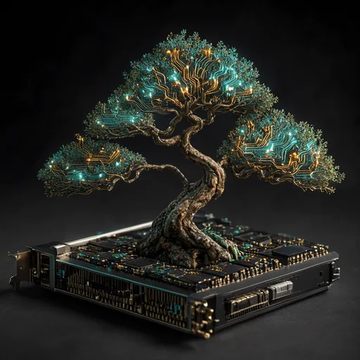

wave64 · chapter 13
Bonsai 2.5 27B is Qwen 3.8 27B compressed to 1.76 bits per weight into a 5.99 GB checkpoint. On Metal under macOS 15 it now runs entirely in VRAM on an 8 GiB AMD RX 580 eGPU. Getting there meant unblocking 64-lane (wave64) execution — and two bugs, both invisible on Apple Silicon, stood in the way.

Bonsai 2.5 27B is PrismML's ternary-compressed rebuild of Qwen 3.8 27B. The architecture is unchanged — 64 blocks, SwiGLU, RoPE, RMSNorm, a hybrid of roughly 75% linear and 25% full-attention layers — but the weights are packed ternary at 1.76 bits per weight, landing the whole model in a 5.99 GB checkpoint (the PTQ1_0 quant, group size 128). That is small enough to sit entirely in the 8 GiB of an RX 580, with no CPU offload.
The compression is not just a smaller file. Every folded matmul is preceded by a runtime activation transform — a fixed sign flip plus a blockwise fast Walsh–Hadamard rotation. PrismML ships custom Metal kernels that operate directly on the packed ternary weights and fuse the sign flip into the transform's load path. Those kernels are what make the 1.76-bpw checkpoint usable rather than merely loadable.
The catch. Those custom kernels are written and validated on Apple Silicon (wave32) and CUDA. An AMD eGPU on macOS is neither. It reports a 64-lane simdgroup — wave64 — and nothing in the PTQ1_0 path had ever been exercised at that width.
The first symptom was a crash, not a wrong answer: EXC_ARITHMETIC, an integer divide-by-zero in ggml_metal_op_mul_mat, on the very first graph compute. The natural suspect was the PTQ1_0 path. It was not.
Instrumenting the dispatcher showed the crashing branch was the stock mul_mv_ext path, and the device it queried reported a simdgroup width of 8, not 64. Width 8 is the signature of the Intel integrated GPU — the machine's default Metal device. For a tensor with ne00=5120 and ne11=2, the branch picks nxpsg=16 lanes per row, computes nypsg = 8/16 = 0 rows per simdgroup, and then divides the grid by r0ptg = 0.
The root cause was routing, not arithmetic. ggml-metal selects its device with MTLCopyAllDevices()[index] and only falls back to MTLCreateSystemDefaultDevice() when the index is out of range. The eGPU shim hooks the latter — so it was bypassed entirely, and the model loaded onto the integrated GPU. The fix is to select the RX 580 by name:
GGML_METAL_DEVICE_NAME="RX 580" llama-server -m Bonsai-2.5-27B-PTQ1_0.gguf -ngl 99 ...With the RX 580 selected, the same branch computes nypsg = 64/16 = 4 and the divide-by-zero disappears. The crash was never a wave64 kernel bug — it was the wave8 integrated GPU reaching a branch written assuming at least 16 lanes.
With the model on the RX 580 it ran without crashing — and produced gibberish. The prompt "The capital of France is" returned "oug? Wait, the user wrote...". Coherent-shaped text, wrong tokens, from token one. That is a numerics bug, not a routing one.
An A/B test isolated it. Forcing PTQ1_0 onto the plain mul_mv kernel (GGML_METAL_VERIFY_OPT=0) returned " Paris." — correct. The default path, a multi-column kernel (ptq1_extc) used for 2–8-column prompt batches, returned garbage. The difference between the two is the threadgroup dispatch.
The ptq1_extc kernel derives its row coverage from a compile-time constant, NY = N_SIMDWIDTH / NX. On the RX 580 the library is compiled from source at runtime with N_SIMDWIDTH = 64, so the kernel expects 64 lanes per simdgroup. But the host dispatched it with a hardcoded 32 threads per simdgroup — the Apple Silicon width. Half the output rows were never computed. The correct value was already in scope on the working path:
// ggml_metal_op_mul_mat_ptq1_extc — dispatch threads-per-simdgroup
- ggml_metal_encoder_dispatch_threadgroups(enc, ..., 1, 32, nsg, 1);
+ ggml_metal_encoder_dispatch_threadgroups(enc, ..., 1, props_dev->simd_width, nsg, 1);Why it never showed up upstream. On Apple Silicon N_SIMDWIDTH is 32 and the hardcoded dispatch is 32 — they agree, so the bug is invisible. It only appears on a device whose simdgroup width differs from 32. That is the defining property of an AMD eGPU, and exactly why wave64 support is a real port and not a recompile.
With both bugs fixed, the model was correct but slow at prompt processing. The ptq1_extc kernel has two tunable knobs, set by environment variables: GGML_METAL_PTQ1_EXTC_NR (rows per lane) and GGML_METAL_PTQ1_EXTC_NSG (simdgroups per threadgroup). Both default to a value tuned on Apple Silicon (NR=4, NSG=2). We swept them on the RX 580 to find whether the Apple-tuned defaults were still right at wave64.
Nine configurations, one fixed 281-token prompt, prompt throughput measured on the RX 580:
PTQ1_EXTC_NR,NSG configurations on the RX 580, one fixed 281-token prompt, temp 0.
Green = the Apple-tuned default (4,2), which the sweep found to be the fastest.
Red = the extreme (8,8), which collapsed to 5.26 tok/s.
The sweep's verdict. Eight of nine configurations cluster tightly between 11.98 and 13.36 tok/s — the knob barely matters across that range. The Apple-tuned default (NR=4, NSG=2) at 13.36 tok/s is the fastest, so no change was needed. The one outlier, the extreme (8,8), collapsed to 5.26 tok/s — a 2.5× slowdown, consistent with the kernel spreading its lanes too thin at wave64.
The sweep settles the configuration question: the defaults were already right for wave64, so the remaining prompt-processing ceiling (~13 tok/s) is the kernel and card, not a tuning gap. That points the next optimization at the card's memory bandwidth rather than the kernel.
With both fixes in place and the default configuration confirmed fastest, the full 27B runs on the RX 580 with the entire model resident in VRAM. Coherence checks on a raw completion: "The capital of France is" returns " Paris."; "Write one sentence about the moon." returns "The Moon is Earth's only natural satellite."
| Measurement | Value | Condition |
|---|---|---|
| Weights on GPU | 5426 MiB (bigbuf nocopy) | whole model, -ngl 99 |
| Total VRAM | 7311 / 8192 MiB | -c 16384 |
| Prompt processing | 11.5 – 13.4 tok/s | 109–281-token prompts, warm |
| Generation | 4.3 – 7.9 tok/s | 64 tokens, temp 0 |
| Context ceiling | ~20–22k | 8 GiB card; 32k does not fit |
The context ceiling is worth stating plainly. The KV cache grows linearly with context while the 5.4 GB of weights is fixed, so doubling context roughly doubles the KV component. At 16384 the card sits at 7311 MiB; 32768 would need roughly 9–9.3 GiB and does not fit. For a coding-agent workload whose prompts run ~9k tokens, 16384 already leaves ~7k of generation headroom.
To show the model is usable and not just benchmark-able, we ran it as the backend for a coding agent and gave it a real task: list a project directory and write a structural overview. The 27B, thinking at ~8 tok/s, listed the directory via the agent's file tool and wrote an accurate overview identifying the project as a CMake C/C++ audio application with a shared core library and three front ends. The task completed end-to-end in ~9.7 minutes. Slow, but correct, and entirely on the card.
These results are one machine, one card, one checkpoint, one macOS version (15). The tok/s figures are from short warm runs on this build, not a swept benchmark; generation ranged 4.3–7.9 tok/s across runs and the server crashed under sustained load, so stability under long production use is not established. The two fixes address device routing and the PTQ1_0 prompt path; the broader wave64 sweep across every quant and Metal op is separate work (the rx580-metal-c1 branch) and is not re-measured here. The prompt-kernel sweep covers one kernel (ptq1_extc); the same hardcoded-32 pattern exists in the q2x_extc kernel and is noted, not fixed here.
Chapter 13 of the wave64 series. Machine: MacBook Pro i7-6700HQ, 16 GiB, AMD Radeon RX 580 8 GiB in an AKiTiO Node eGPU, macOS 15. Model: Ternary-Bonsai-2.5-27B-PTQ1_0.gguf (5.99 GB). Build: llama.cpp Metal with PrismML PTQ1_0 kernels. Fetched and measured 2026-11-25/26.